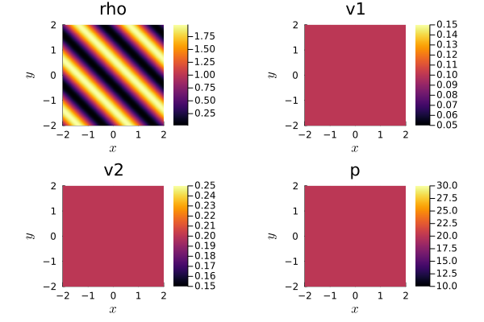

1: Getting started


Trixi.jl is a numerical simulation framework for conservation laws and is written in the Julia programming language. This tutorial is intended for beginners in Julia and Trixi.jl. After reading it, you will know how to install Julia and Trixi.jl on your computer, and you will be able to download setup files from our GitHub repository, modify them, and run simulations.
Julia installation
Trixi.jl works with the current stable Julia release. More information about Julia support can be found in the README.md file. A detailed description of the installation process can be found in the Julia installation instructions. But you can follow also our short installation guidelines for Windows and Linux below.
Windows
- Download Julia installer for Windows from https://julialang.org/downloads/. Make sure that you choose the right version of installer (64-bit or 32-bit) according to your computer.
- Open the downloaded installer.
- Paste an installation directory path or find it using a file manager (select
Browse). - Select
Next. - Check the
Add Julia to PATHoption to add Julia to the environment variables. This makes it possible to run Julia in the terminal from any directory by only typingjulia. - Select
Next, then Julia will be installed.
Now you can verify, that Julia is installed:
- Press
Win+Ron a keyboard. - Enter
cmdin opened window. - Enter in a terminal
julia.
Then Julia will be invoked. To close Julia enter exit() or press Ctrl+d.
Linux
- Open a terminal and navigate (using
cd) to the directory, where you want to store Julia. - To install Julia, get a link to the latest version of Julia from the Julia website, then download an archive file by executing:
wget https://julialang-s3.julialang.org/bin/linux/... # your link goes here - Unpack the downloaded file with:
tar xf julia-....tar.gz # your archive filename goes here
Now you can verify that Julia is installed entering <Julia directory>/bin/julia (e.g. julia-1.8.5/bin/julia) command in a terminal. <Julia directory> is the directory where Julia is installed. Then Julia will be invoked. To close Julia, enter exit() or press Ctrl+d.
Note, that further in the tutorial Julia will be invoked only typing julia in a terminal. To enable that, you have to add Julia to the PATH.
Trixi.jl installation
Trixi.jl and its related tools are registered Julia packages, thus their installation happens inside Julia. For a smooth workflow experience with Trixi.jl, you need to install Trixi.jl, OrdinaryDiffEq.jl and Plots.jl.
- Open a terminal and invoke Julia (Windows and Linux: type
julia). - Execute following commands:
import Pkg Pkg.add(["OrdinaryDiffEq", "Plots", "Trixi"])
Now you have installed all these packages. OrdinaryDiffEq.jl provides time integration schemes used by Trixi.jl and Plots.jl can be used to directly visualize Trixi.jl results from the Julia REPL.
Usage
Running a simulation
To get you started, Trixi.jl has a large set of example setups, that can be taken as a basis for your future investigations. In Trixi.jl, we call these setup files "elixirs", since they contain Julia code that takes parts of Trixi.jl and combines them into something new.
Now execute one of the examples using the trixi_include function. trixi_include(...) expects a single string argument with a path to a file containing Julia code. joinpath(...) join a path components into a full path. The examples_dir function returns a path to the examples folder that has been locally downloaded while installing Trixi.jl.
Let's execute a short two-dimensional problem setup. It approximates the solution of the compressible Euler equations in 2D for an ideal gas (CompressibleEulerEquations2D) with a weak blast wave as the initial condition.
Start Julia in a terminal and execute following code:
using Trixi, OrdinaryDiffEq
trixi_include(joinpath(examples_dir(), "tree_2d_dgsem", "elixir_euler_ec.jl"))[ Info: You just called `trixi_include`. Julia may now compile the code, please be patient.
████████╗██████╗ ██╗██╗ ██╗██╗
╚══██╔══╝██╔══██╗██║╚██╗██╔╝██║
██║ ██████╔╝██║ ╚███╔╝ ██║
██║ ██╔══██╗██║ ██╔██╗ ██║
██║ ██║ ██║██║██╔╝ ██╗██║
╚═╝ ╚═╝ ╚═╝╚═╝╚═╝ ╚═╝╚═╝
┌──────────────────────────────────────────────────────────────────────────────────────────────────┐
│ SemidiscretizationHyperbolic │
│ ════════════════════════════ │
│ #spatial dimensions: ………………………… 2 │
│ mesh: ………………………………………………………………… TreeMesh{2, Trixi.SerialTree{2}} with length 1365 │
│ equations: …………………………………………………… CompressibleEulerEquations2D │
│ initial condition: ……………………………… initial_condition_weak_blast_wave │
│ boundary conditions: ………………………… Trixi.BoundaryConditionPeriodic │
│ source terms: …………………………………………… nothing │
│ solver: …………………………………………………………… DG │
│ total #DOFs: ……………………………………………… 16384 │
└──────────────────────────────────────────────────────────────────────────────────────────────────┘
┌──────────────────────────────────────────────────────────────────────────────────────────────────┐
│ TreeMesh{2, Trixi.SerialTree{2}} │
│ ════════════════════════════════ │
│ center: …………………………………………………………… [0.0, 0.0] │
│ length: …………………………………………………………… 4.0 │
│ periodicity: ……………………………………………… (true, true) │
│ current #cells: ……………………………………… 1365 │
│ #leaf-cells: ……………………………………………… 1024 │
│ maximum #cells: ……………………………………… 10000 │
└──────────────────────────────────────────────────────────────────────────────────────────────────┘
┌──────────────────────────────────────────────────────────────────────────────────────────────────┐
│ CompressibleEulerEquations2D │
│ ════════════════════════════ │
│ #variables: ………………………………………………… 4 │
│ │ variable 1: …………………………………………… rho │
│ │ variable 2: …………………………………………… rho_v1 │
│ │ variable 3: …………………………………………… rho_v2 │
│ │ variable 4: …………………………………………… rho_e │
└──────────────────────────────────────────────────────────────────────────────────────────────────┘
┌──────────────────────────────────────────────────────────────────────────────────────────────────┐
│ DG{Float64} │
│ ═══════════ │
│ basis: ……………………………………………………………… LobattoLegendreBasis{Float64}(polydeg=3) │
│ mortar: …………………………………………………………… LobattoLegendreMortarL2{Float64}(polydeg=3) │
│ surface integral: ………………………………… SurfaceIntegralWeakForm │
│ │ surface flux: ……………………………………… flux_ranocha │
│ volume integral: …………………………………… VolumeIntegralFluxDifferencing │
│ │ volume flux: ………………………………………… flux_ranocha │
└──────────────────────────────────────────────────────────────────────────────────────────────────┘
┌──────────────────────────────────────────────────────────────────────────────────────────────────┐
│ AnalysisCallback │
│ ════════════════ │
│ interval: ……………………………………………………… 100 │
│ analyzer: ……………………………………………………… LobattoLegendreAnalyzer{Float64}(polydeg=6) │
│ │ error 1: …………………………………………………… l2_error │
│ │ error 2: …………………………………………………… linf_error │
│ │ integral 1: …………………………………………… entropy_timederivative │
│ save analysis to file: …………………… no │
└──────────────────────────────────────────────────────────────────────────────────────────────────┘
┌──────────────────────────────────────────────────────────────────────────────────────────────────┐
│ AliveCallback │
│ ═════════════ │
│ interval: ……………………………………………………… 10 │
└──────────────────────────────────────────────────────────────────────────────────────────────────┘
┌──────────────────────────────────────────────────────────────────────────────────────────────────┐
│ SaveSolutionCallback │
│ ════════════════════ │
│ interval: ……………………………………………………… 100 │
│ solution variables: …………………………… cons2prim │
│ save initial solution: …………………… yes │
│ save final solution: ………………………… yes │
│ output directory: ………………………………… D:\work\Trixi.jl.my\docs\build\tutorials\out │
└──────────────────────────────────────────────────────────────────────────────────────────────────┘
┌──────────────────────────────────────────────────────────────────────────────────────────────────┐
│ StepsizeCallback │
│ ════════════════ │
│ CFL number: ………………………………………………… 1.0 │
└──────────────────────────────────────────────────────────────────────────────────────────────────┘
┌──────────────────────────────────────────────────────────────────────────────────────────────────┐
│ Time integration │
│ ════════════════ │
│ Start time: ………………………………………………… 0.0 │
│ Final time: ………………………………………………… 0.4 │
│ time integrator: …………………………………… CarpenterKennedy2N54 │
│ adaptive: ……………………………………………………… false │
└──────────────────────────────────────────────────────────────────────────────────────────────────┘
┌──────────────────────────────────────────────────────────────────────────────────────────────────┐
│ Environment information │
│ ═══════════════════════ │
│ #threads: ……………………………………………………… 1 │
└──────────────────────────────────────────────────────────────────────────────────────────────────┘
────────────────────────────────────────────────────────────────────────────────────────────────────
Simulation running 'CompressibleEulerEquations2D' with DGSEM(polydeg=3)
────────────────────────────────────────────────────────────────────────────────────────────────────
#timesteps: 0 run time: 6.31000000e-05 s
Δt: 1.00000000e+00 └── GC time: 0.00000000e+00 s (0.000%)
sim. time: 0.00000000e+00 time/DOF/rhs!: NaN s
PID: Inf s
#DOF: 16384 alloc'd memory: 2282.540 MiB
#elements: 1024
Variable: rho rho_v1 rho_v2 rho_e
L2 error: 6.25621384e-03 5.88786362e-03 5.81457821e-03 2.34267393e-02
Linf error: 1.06470791e-01 2.46283676e-01 1.37585923e-01 3.98685775e-01
∑∂S/∂U ⋅ Uₜ : 2.63255193e-19
────────────────────────────────────────────────────────────────────────────────────────────────────
#timesteps: 10 │ Δt: 1.0797e-02 │ sim. time: 1.0745e-01 │ run time: 6.9549e-02 s
#timesteps: 20 │ Δt: 1.1033e-02 │ sim. time: 2.1692e-01 │ run time: 1.3320e-01 s
#timesteps: 30 │ Δt: 1.1481e-02 │ sim. time: 3.3075e-01 │ run time: 2.0049e-01 s
────────────────────────────────────────────────────────────────────────────────────────────────────
Simulation running 'CompressibleEulerEquations2D' with DGSEM(polydeg=3)
────────────────────────────────────────────────────────────────────────────────────────────────────
#timesteps: 37 run time: 2.63267300e-01 s
Δt: 4.74704430e-04 └── GC time: 0.00000000e+00 s (0.000%)
sim. time: 4.00000000e-01 time/DOF/rhs!: 7.83632982e-08 s
PID: 8.50263370e-08 s
#DOF: 16384 alloc'd memory: 2284.182 MiB
#elements: 1024
Variable: rho rho_v1 rho_v2 rho_e
L2 error: 6.17517156e-02 5.01822362e-02 5.01898945e-02 2.25871560e-01
Linf error: 2.93475829e-01 3.10812492e-01 3.10738039e-01 1.05403580e+00
∑∂S/∂U ⋅ Uₜ : -2.93050610e-18
────────────────────────────────────────────────────────────────────────────────────────────────────
────────────────────────────────────────────────────────────────────────────────────────────────────
Trixi.jl simulation finished. Final time: 0.4 Time steps: 37 (accepted), 37 (total)
────────────────────────────────────────────────────────────────────────────────────────────────────
────────────────────────────────────────────────────────────────────────────────
Trixi.jl Time Allocations
─────────────────────── ────────────────────────
Tot / % measured: 276ms / 95.6% 3.69MiB / 85.9%
Section ncalls time %tot avg alloc %tot avg
────────────────────────────────────────────────────────────────────────────────
rhs! 186 239ms 90.5% 1.28ms 9.33KiB 0.3% 51.4B
volume integral 186 177ms 67.2% 954μs 0.00B 0.0% 0.00B
interface flux 186 38.7ms 14.6% 208μs 0.00B 0.0% 0.00B
surface integral 186 10.5ms 4.0% 56.4μs 0.00B 0.0% 0.00B
prolong2interfaces 186 9.20ms 3.5% 49.4μs 0.00B 0.0% 0.00B
Jacobian 186 1.40ms 0.5% 7.50μs 0.00B 0.0% 0.00B
reset ∂u/∂t 186 1.28ms 0.5% 6.86μs 0.00B 0.0% 0.00B
~rhs!~ 186 321μs 0.1% 1.72μs 9.33KiB 0.3% 51.4B
prolong2mortars 186 23.0μs 0.0% 124ns 0.00B 0.0% 0.00B
prolong2boundaries 186 13.7μs 0.0% 73.7ns 0.00B 0.0% 0.00B
mortar flux 186 10.3μs 0.0% 55.4ns 0.00B 0.0% 0.00B
source terms 186 5.40μs 0.0% 29.0ns 0.00B 0.0% 0.00B
boundary flux 186 5.40μs 0.0% 29.0ns 0.00B 0.0% 0.00B
I/O 3 12.9ms 4.9% 4.30ms 3.11MiB 98.0% 1.04MiB
save solution 2 9.14ms 3.5% 4.57ms 3.02MiB 95.3% 1.51MiB
~I/O~ 3 3.74ms 1.4% 1.25ms 84.2KiB 2.6% 28.1KiB
get element vari... 2 28.3μs 0.0% 14.2μs 4.75KiB 0.1% 2.38KiB
save mesh 2 200ns 0.0% 100ns 0.00B 0.0% 0.00B
analyze solution 2 8.89ms 3.4% 4.45ms 55.3KiB 1.7% 27.6KiB
calculate dt 38 3.35ms 1.3% 88.3μs 0.00B 0.0% 0.00B
────────────────────────────────────────────────────────────────────────────────To analyze the result of the computation, we can use the Plots.jl package and the function plot(...), which creates a graphical representation of the solution. sol is a variable defined in executed example and it contains the solution at the final moment of the simulation.
using Plots
plot(sol)To obtain list of all Trixi.jl elixirs execute get_examples. It returns the path to all example setups.
get_examples()357-element Vector{String}:
"D:\\work\\Trixi.jl.my\\examples\\dgmulti_1d\\elixir_advection_gauss_sbp.jl"
"D:\\work\\Trixi.jl.my\\examples\\dgmulti_1d\\elixir_euler_fdsbp_periodic.jl"
"D:\\work\\Trixi.jl.my\\examples\\dgmulti_1d\\elixir_euler_flux_diff.jl"
"D:\\work\\Trixi.jl.my\\examples\\dgmulti_2d\\elixir_advection_diffusion.jl"
"D:\\work\\Trixi.jl.my\\examples\\dg" ⋯ 19 bytes ⋯ "ection_diffusion_nonperiodic.jl"
"D:\\work\\Trixi.jl.my\\examples\\dgmulti_2d\\elixir_advection_diffusion_periodic.jl"
"D:\\work\\Trixi.jl.my\\examples\\dgmulti_2d\\elixir_euler_bilinear.jl"
"D:\\work\\Trixi.jl.my\\examples\\dgmulti_2d\\elixir_euler_brown_minion_vortex.jl"
"D:\\work\\Trixi.jl.my\\examples\\dgmulti_2d\\elixir_euler_curved.jl"
"D:\\work\\Trixi.jl.my\\examples\\dgmulti_2d\\elixir_euler_fdsbp_periodic.jl"
⋮
"D:\\work\\Trixi.jl.my\\examples\\unstructured_2d_dgsem\\elixir_shallowwater_ec.jl"
"D:\\work\\Trixi.jl.my\\examples\\un" ⋯ 29 bytes ⋯ "allowwater_ec_shockcapturing.jl"
"D:\\work\\Trixi.jl.my\\examples\\un" ⋯ 24 bytes ⋯ "ir_shallowwater_source_terms.jl"
"D:\\work\\Trixi.jl.my\\examples\\un" ⋯ 33 bytes ⋯ "wwater_three_mound_dam_break.jl"
"D:\\work\\Trixi.jl.my\\examples\\un" ⋯ 32 bytes ⋯ "owwater_twolayer_convergence.jl"
"D:\\work\\Trixi.jl.my\\examples\\un" ⋯ 30 bytes ⋯ "llowwater_twolayer_dam_break.jl"
"D:\\work\\Trixi.jl.my\\examples\\un" ⋯ 34 bytes ⋯ "water_twolayer_well_balanced.jl"
"D:\\work\\Trixi.jl.my\\examples\\un" ⋯ 34 bytes ⋯ "water_wall_bc_shockcapturing.jl"
"D:\\work\\Trixi.jl.my\\examples\\un" ⋯ 25 bytes ⋯ "r_shallowwater_well_balanced.jl"Editing an existing elixirs is the best way to start your first own investigation using Trixi.jl.
Getting an existing setup file
To edit an existing elixir, you first have to find a suitable one and then copy it to a local folder. Let's have a look how to download the elixir_euler_ec.jl elixir used in the previous section from the Trixi.jl GitHub repository.
- All examples are located inside the
examplesfolder. - Navigate to the file
elixir_euler_ec.jl. - Right-click the
Rawbutton on the right side of the webpage and chooseSave as...(orSave Link As...). - Choose a folder and save the file.
Modifying an existing setup
For example, we will change the initial condition for calculations that occur in elixir_euler_ec.jl. In this example we consider the compressible Euler equations in two spatial dimensions,
\[\frac{\partial}{\partial t} \begin{pmatrix} \rho \\ \rho v_1 \\ \rho v_2 \\ \rho e \end{pmatrix} + \frac{\partial}{\partial x} \begin{pmatrix} \rho v_1 \\ \rho v_1^2 + p \\ \rho v_1 v_2 \\ (\rho e +p) v_1 \end{pmatrix} + \frac{\partial}{\partial y} \begin{pmatrix} \rho v_2 \\ \rho v_1 v_2 \\ \rho v_2^2 + p \\ (\rho e +p) v_2 \end{pmatrix} = \begin{pmatrix} 0 \\ 0 \\ 0 \\ 0 \end{pmatrix},\]
for an ideal gas with the specific heat ratio $\gamma$. Here, $\rho$ is the density, $v_1$ and $v_2$ are the velocities, $e$ is the specific total energy, and
\[p = (\gamma - 1) \left( \rho e - \frac{1}{2} \rho (v_1^2+v_2^2) \right)\]
is the pressure. Initial conditions consist of initial values for $\rho$, $\rho v_1$, $\rho v_2$ and $\rho e$. One of the common initial conditions for the compressible Euler equations is a simple density wave. Let's implement it.
- Open the downloaded file
elixir_euler_ec.jlwith a text editor. - Go to the line with the following code:
Here,initial_condition = initial_condition_weak_blast_waveinitial_condition_weak_blast_waveis used as the initial condition. - Comment out the line using the
#symbol:# initial_condition = initial_condition_weak_blast_wave - Now you can create your own initial conditions. Add the following code after the commented line:
function initial_condition_density_waves(x, t, equations::CompressibleEulerEquations2D)
v1 = 0.1 # velocity along x-axis
v2 = 0.2 # velocity along y-axis
rho = 1.0 + 0.98 * sin(pi * (sum(x) - t * (v1 + v2))) # density wave profile
p = 20 # pressure
rho_e = p / (equations.gamma - 1) + 1/2 * rho * (v1^2 + v2^2)
return SVector(rho, rho*v1, rho*v2, rho_e)
end
initial_condition = initial_condition_density_wavesinitial_condition_density_waves (generic function with 1 method)- Execute the following code one more time, but instead of
path/to/filepaste the path to theelixir_euler_ec.jlfile that you just edited.using Trixi trixi_include(path/to/file) using Plots plot(sol)
Then you will obtain a new solution from running the simulation with a different initial condition.
Feel free to make further changes to the initial condition to observe different solutions.
Now you are able to download, modify and execute simulation setups for Trixi.jl.
Create first setup
In this part of the tutorial, we will consider a creation of the first Trixi.jl setup, which is an extension of elixir_advection_basic.jl. Trixi.jl has a common basic structure of the setup, so you can create your own by extending the following example.
Let's consider the linear advection equation in two-dimensional spatial domain [-1.0, 1.0]⨯[-1.0, 1.0] with a source term.
\[\partial_t u(t,x,y) + 0.2 \partial_x u(t,x,y) - 0.7 \partial_y u(t,x,y) = - 2 \exp(-t) \sin\bigl(2 \pi (x - t) \bigr) \sin\bigl(2 \pi (y - t) \bigr)\]
With an initial condition
\[u(0,x,y) = \sin\bigl(\pi x \bigr) \sin\bigl(\pi y \bigr).\]
The first step is to create and open a file with the .jl extension. You can do this with your favorite text editor.
First you need to connect the packages that you will use in your setup. By default, you will always need Trixi.jl itself and OrdinaryDiffEq.jl.
using Trixi
using OrdinaryDiffEqThe next thing to do is to choose an equation that is suitable for your problem. To see all the currently implemented equations, take a look at src/equations. If you are interested in adding a new physics model that has not yet been implemented in Trixi.jl, take a look at adding a new scalar conservation law and adding a non-conservative equation.
The linear scalar advection equation is already implemented in Trixi.jl as LinearScalarAdvectionEquation2D. For which we need to define a two-dimensional parameter named advection_velocity, suitable for our problem is (0.2, -0.7).
advection_velocity = (0.2, -0.7)
equations = LinearScalarAdvectionEquation2D(advection_velocity)┌──────────────────────────────────────────────────────────────────────────────────────────────────┐
│ LinearScalarAdvectionEquation2D │
│ ═══════════════════════════════ │
│ #variables: ………………………………………………… 1 │
│ │ variable 1: …………………………………………… scalar │
└──────────────────────────────────────────────────────────────────────────────────────────────────┘To solve our problem numerically using Trixi.jl, we have to define an instruction for spatial discretization. To do it, we set up a mesh. The most widely supported in Trixi.jl is TreeMesh. The spatial domain used is [-1.0, 1.0]⨯[-1.0, 1.0]. We also set a number of elements in the mesh using initial_refinement_level, which describes the initial height of the tree mesh. The variable n_cells_max is used to limit the number of elements in the mesh, which cannot be exceeded due to adaptive mesh refinement.
All minimum and all maximum coordinates must be combined into Tuples.
coordinates_min = (-1.0, -1.0)
coordinates_max = ( 1.0, 1.0)
mesh = TreeMesh(coordinates_min, coordinates_max,
initial_refinement_level = 4,
n_cells_max = 30_000)┌──────────────────────────────────────────────────────────────────────────────────────────────────┐
│ TreeMesh{2, Trixi.SerialTree{2}} │
│ ════════════════════════════════ │
│ center: …………………………………………………………… [0.0, 0.0] │
│ length: …………………………………………………………… 2.0 │
│ periodicity: ……………………………………………… (true, true) │
│ current #cells: ……………………………………… 341 │
│ #leaf-cells: ……………………………………………… 256 │
│ maximum #cells: ……………………………………… 30000 │
└──────────────────────────────────────────────────────────────────────────────────────────────────┘To approximate the solution of the defined model, we create a DG solver. The solution in each of the recently defined mesh elements will be approximated by a polynomial of degree polydeg. See more in the Introduction to DG methods.
solver = DGSEM(polydeg=3)┌──────────────────────────────────────────────────────────────────────────────────────────────────┐
│ DG{Float64} │
│ ═══════════ │
│ basis: ……………………………………………………………… LobattoLegendreBasis{Float64}(polydeg=3) │
│ mortar: …………………………………………………………… LobattoLegendreMortarL2{Float64}(polydeg=3) │
│ surface integral: ………………………………… SurfaceIntegralWeakForm │
│ │ surface flux: ……………………………………… flux_central │
│ volume integral: …………………………………… VolumeIntegralWeakForm │
└──────────────────────────────────────────────────────────────────────────────────────────────────┘Now we need to define the initial conditions for our problem. All the already implemented initial conditions for LinearScalarAdvectionEquation2D can be found in src/equations/linear_scalar_advection_2d.jl. If you want to use, for example, a Gaussian pulse, it can be used as follows.
initial_conditions = initial_condition_gaussBut for our problem, we define our own initial conditions.
\[u(0,x,y) = \sin\bigl(\pi x \bigr) \sin\bigl(\pi y \bigr)\]
The initial conditions function must take coordinates, time and the equation itself as arguments and return the initial conditions as a static vector SVector. Following the same structure, you can define your own initial conditions.
function initial_condition_sin(x, t, equations::LinearScalarAdvectionEquation2D)
scalar = sinpi(x[1]) * sinpi(x[2])
return SVector(scalar)
end
initial_condition = initial_condition_sininitial_condition_sin (generic function with 1 method)The next step is to define the function of the source term corresponding to our problem.
\[f(t,u,x,y) = - 2 \exp(-t) \sin\bigl(2 \pi (x - t) \bigr) \sin\bigl(2 \pi (y - t) \bigr)\]
This function must take the target variable, coordinates, time and the equation itself as arguments and return the source term as a static vector SVector.
function source_term_exp_sin(u, x, t, equations::LinearScalarAdvectionEquation2D)
scalar = - 2 * exp(-t) * sinpi(2*(x[1] - t)) * sinpi(2*(x[2] - t))
return SVector(scalar)
endsource_term_exp_sin (generic function with 1 method)Now we are collecting all the information that will be needed to define spatial discretization and to create an ODE problem with a time span from 0.0 s to 1.0 s.
semi = SemidiscretizationHyperbolic(mesh, equations, initial_condition, solver;
source_terms = source_term_exp_sin)
tspan = (0.0, 1.0)
ode = semidiscretize(semi, tspan);At this point, our problem is defined. We will use the solve function defined in OrdinaryDiffEq.jl to get the solution. OrdinaryDiffEq.jl gives us ability to customize the solver using callbacks without actually modifying it. Trixi.jl already has some implemented Callbacks. The most widely used callbacks in Trixi.jl are step control callbacks that are activated at the end of each time step to perform some actions, e.g. to print a statistics. We will show you how to use some of the common callbacks.
To print a summary of the simulation setup at the beginning of solve-loop and to reset timers we use SummaryCallback.
summary_callback = SummaryCallback()SummaryCallbackAlso we want to analyse the current state of the solution in regular intervals. AnalysisCallback outputs some useful statistical information during the solving process every interval time steps.
analysis_callback = AnalysisCallback(semi, interval = 5)┌──────────────────────────────────────────────────────────────────────────────────────────────────┐
│ AnalysisCallback │
│ ════════════════ │
│ interval: ……………………………………………………… 5 │
│ analyzer: ……………………………………………………… LobattoLegendreAnalyzer{Float64}(polydeg=6) │
│ │ error 1: …………………………………………………… l2_error │
│ │ error 2: …………………………………………………… linf_error │
│ │ integral 1: …………………………………………… entropy_timederivative │
│ save analysis to file: …………………… no │
└──────────────────────────────────────────────────────────────────────────────────────────────────┘It is also possible to control the time step size using StepsizeCallback if the time integration method isn't adaptive itself. To get more details, look at CFL based step size control.
stepsize_callback = StepsizeCallback(cfl = 1.6)┌──────────────────────────────────────────────────────────────────────────────────────────────────┐
│ StepsizeCallback │
│ ════════════════ │
│ CFL number: ………………………………………………… 1.6 │
└──────────────────────────────────────────────────────────────────────────────────────────────────┘To save the current numerical solution in regular intervals we use SaveSolutionCallback. We set the interval equal 5, which means that the solution will be saved every 5 time steps. Also we would like to save the initial and final solutions. Solution will be saved as a HDF5 file located in the out folder. Afterwards it is possible to visualize the solution from the saved files using Trixi2Vtk.jl and ParaView, this is described below in the section Visualize the solution.
save_solution = SaveSolutionCallback(interval = 5,
save_initial_solution = true,
save_final_solution = true)┌──────────────────────────────────────────────────────────────────────────────────────────────────┐
│ SaveSolutionCallback │
│ ════════════════════ │
│ interval: ……………………………………………………… 5 │
│ solution variables: …………………………… cons2prim │
│ save initial solution: …………………… yes │
│ save final solution: ………………………… yes │
│ output directory: ………………………………… D:\work\Trixi.jl.my\docs\out │
└──────────────────────────────────────────────────────────────────────────────────────────────────┘Another useful callback is SaveRestartCallback. It saves information for restarting in regular intervals, which we set to 100 time steps. Also we are interested in saving the restart file for the final solution. To perform a restart, you need to configure the restart setup in a special way, which is described in the section Restart simulation.
save_restart = SaveRestartCallback(interval = 100, save_final_restart = true)┌──────────────────────────────────────────────────────────────────────────────────────────────────┐
│ SaveRestartCallback │
│ ═══════════════════ │
│ interval: ……………………………………………………… 100 │
│ save final solution: ………………………… yes │
│ output directory: ………………………………… D:\work\Trixi.jl.my\docs\out │
└──────────────────────────────────────────────────────────────────────────────────────────────────┘Create a CallbackSet to collect all callbacks so that they can be passed to the solve function.
callbacks = CallbackSet(summary_callback, analysis_callback, stepsize_callback, save_solution,
save_restart)CallbackSet{Tuple{}, Tuple{DiscreteCallback{typeof(Trixi.summary_callback), typeof(Trixi.summary_callback), Trixi.var"#initialize#1285"{Bool}, typeof(SciMLBase.FINALIZE_DEFAULT)}, DiscreteCallback{Trixi.var"#1289#1296"{Int64}, AnalysisCallback{Trixi.LobattoLegendreAnalyzer{Float64, 7, SVector{7, Float64}, Matrix{Float64}}, Tuple{typeof(Trixi.entropy_timederivative)}, SVector{1, Float64}, NamedTuple{(:u_local, :u_tmp1, :x_local, :x_tmp1), Tuple{StrideArraysCore.StaticStrideArray{Float64, 3, (1, 2, 3), Tuple{Static.StaticInt{1}, Static.StaticInt{7}, Static.StaticInt{7}}, Tuple{Nothing, Nothing, Nothing}, Tuple{Static.StaticInt{1}, Static.StaticInt{1}, Static.StaticInt{1}}, 49}, StrideArraysCore.StaticStrideArray{Float64, 3, (1, 2, 3), Tuple{Static.StaticInt{1}, Static.StaticInt{7}, Static.StaticInt{4}}, Tuple{Nothing, Nothing, Nothing}, Tuple{Static.StaticInt{1}, Static.StaticInt{1}, Static.StaticInt{1}}, 28}, StrideArraysCore.StaticStrideArray{Float64, 3, (1, 2, 3), Tuple{Static.StaticInt{2}, Static.StaticInt{7}, Static.StaticInt{7}}, Tuple{Nothing, Nothing, Nothing}, Tuple{Static.StaticInt{1}, Static.StaticInt{1}, Static.StaticInt{1}}, 98}, StrideArraysCore.StaticStrideArray{Float64, 3, (1, 2, 3), Tuple{Static.StaticInt{2}, Static.StaticInt{7}, Static.StaticInt{4}}, Tuple{Nothing, Nothing, Nothing}, Tuple{Static.StaticInt{1}, Static.StaticInt{1}, Static.StaticInt{1}}, 56}}}}, typeof(Trixi.initialize!), typeof(SciMLBase.FINALIZE_DEFAULT)}, DiscreteCallback{StepsizeCallback{Float64}, StepsizeCallback{Float64}, typeof(Trixi.initialize!), typeof(SciMLBase.FINALIZE_DEFAULT)}, DiscreteCallback{SaveSolutionCallback{Int64, typeof(cons2prim)}, SaveSolutionCallback{Int64, typeof(cons2prim)}, typeof(Trixi.initialize_save_cb!), typeof(SciMLBase.FINALIZE_DEFAULT)}, DiscreteCallback{SaveRestartCallback, SaveRestartCallback, typeof(Trixi.initialize!), typeof(SciMLBase.FINALIZE_DEFAULT)}}}((), (SummaryCallback, DiscreteCallback{Trixi.var"#1289#1296"{Int64}, AnalysisCallback{Trixi.LobattoLegendreAnalyzer{Float64, 7, SVector{7, Float64}, Matrix{Float64}}, Tuple{typeof(Trixi.entropy_timederivative)}, SVector{1, Float64}, NamedTuple{(:u_local, :u_tmp1, :x_local, :x_tmp1), Tuple{StrideArraysCore.StaticStrideArray{Float64, 3, (1, 2, 3), Tuple{Static.StaticInt{1}, Static.StaticInt{7}, Static.StaticInt{7}}, Tuple{Nothing, Nothing, Nothing}, Tuple{Static.StaticInt{1}, Static.StaticInt{1}, Static.StaticInt{1}}, 49}, StrideArraysCore.StaticStrideArray{Float64, 3, (1, 2, 3), Tuple{Static.StaticInt{1}, Static.StaticInt{7}, Static.StaticInt{4}}, Tuple{Nothing, Nothing, Nothing}, Tuple{Static.StaticInt{1}, Static.StaticInt{1}, Static.StaticInt{1}}, 28}, StrideArraysCore.StaticStrideArray{Float64, 3, (1, 2, 3), Tuple{Static.StaticInt{2}, Static.StaticInt{7}, Static.StaticInt{7}}, Tuple{Nothing, Nothing, Nothing}, Tuple{Static.StaticInt{1}, Static.StaticInt{1}, Static.StaticInt{1}}, 98}, StrideArraysCore.StaticStrideArray{Float64, 3, (1, 2, 3), Tuple{Static.StaticInt{2}, Static.StaticInt{7}, Static.StaticInt{4}}, Tuple{Nothing, Nothing, Nothing}, Tuple{Static.StaticInt{1}, Static.StaticInt{1}, Static.StaticInt{1}}, 56}}}}, typeof(Trixi.initialize!), typeof(SciMLBase.FINALIZE_DEFAULT)}(Trixi.var"#1289#1296"{Int64}(5), AnalysisCallback{Trixi.LobattoLegendreAnalyzer{Float64, 7, SVector{7, Float64}, Matrix{Float64}}, Tuple{typeof(Trixi.entropy_timederivative)}, SVector{1, Float64}, NamedTuple{(:u_local, :u_tmp1, :x_local, :x_tmp1), Tuple{StrideArraysCore.StaticStrideArray{Float64, 3, (1, 2, 3), Tuple{Static.StaticInt{1}, Static.StaticInt{7}, Static.StaticInt{7}}, Tuple{Nothing, Nothing, Nothing}, Tuple{Static.StaticInt{1}, Static.StaticInt{1}, Static.StaticInt{1}}, 49}, StrideArraysCore.StaticStrideArray{Float64, 3, (1, 2, 3), Tuple{Static.StaticInt{1}, Static.StaticInt{7}, Static.StaticInt{4}}, Tuple{Nothing, Nothing, Nothing}, Tuple{Static.StaticInt{1}, Static.StaticInt{1}, Static.StaticInt{1}}, 28}, StrideArraysCore.StaticStrideArray{Float64, 3, (1, 2, 3), Tuple{Static.StaticInt{2}, Static.StaticInt{7}, Static.StaticInt{7}}, Tuple{Nothing, Nothing, Nothing}, Tuple{Static.StaticInt{1}, Static.StaticInt{1}, Static.StaticInt{1}}, 98}, StrideArraysCore.StaticStrideArray{Float64, 3, (1, 2, 3), Tuple{Static.StaticInt{2}, Static.StaticInt{7}, Static.StaticInt{4}}, Tuple{Nothing, Nothing, Nothing}, Tuple{Static.StaticInt{1}, Static.StaticInt{1}, Static.StaticInt{1}}, 56}}}}(0.0, 0.0, 0, 0.0, 5, false, "out", "analysis.dat", LobattoLegendreAnalyzer{Float64}(polydeg=6), [:l2_error, :linf_error], (Trixi.entropy_timederivative,), [0.0], (u_local = [0.0 0.0 … 0.0 0.0;;; 0.0 0.0 … 0.0 0.0;;; 0.0 0.0 … 0.0 0.0;;; 0.0 0.0 … 0.0 0.0;;; 0.0 0.0 … 0.0 0.0;;; 0.0 0.0 … 0.0 0.0;;; 0.0 0.0 … 0.0 0.0], u_tmp1 = [0.0 0.0 … 0.0 0.0;;; 0.0 0.0 … 0.0 0.0;;; 0.0 0.0 … 0.0 0.0;;; 0.0 0.0 … 0.0 0.0], x_local = [0.0 0.0 … 0.0 0.0; 0.0 0.0 … 0.0 0.0;;; 0.0 0.0 … 0.0 0.0; 0.0 0.0 … 0.0 0.0;;; 0.0 0.0 … 0.0 0.0; 0.0 0.0 … 0.0 0.0;;; 0.0 0.0 … 0.0 0.0; 0.0 0.0 … 0.0 0.0;;; 0.0 0.0 … 0.0 0.0; 0.0 0.0 … 0.0 0.0;;; 0.0 0.0 … 0.0 0.0; 0.0 0.0 … 0.0 0.0;;; 0.0 0.0 … 0.0 0.0; 0.0 0.0 … 0.0 0.0], x_tmp1 = [0.0 0.0 … 0.0 0.0; 0.0 0.0 … 0.0 0.0;;; 0.0 0.0 … 0.0 0.0; 0.0 0.0 … 0.0 0.0;;; 0.0 0.0 … 0.0 0.0; 0.0 0.0 … 0.0 0.0;;; 0.0 0.0 … 0.0 0.0; 0.0 0.0 … 0.0 0.0])), Trixi.initialize!, SciMLBase.FINALIZE_DEFAULT, Bool[0, 0]), StepsizeCallback(cfl_number=1.6), SaveSolutionCallback(interval=5), SaveRestartCallback(interval=100)))The last step is to choose the time integration method, OrdinaryDiffEq.jl defines a wide range of ODE solvers, e.g. CarpenterKennedy2N54(williamson_condition = false). We will pass the ODE problem, the ODE solver and the callbacks to the solve function. Also, to use StepsizeCallback, we must explicitly specify the time step dt, the selected value is not important, because it will be overwritten by StepsizeCallback. And there is no need to save every step of the solution, we are only interested in the final result.
sol = solve(ode, CarpenterKennedy2N54(williamson_condition = false), dt = 1.0,
save_everystep = false, callback = callbacks);
████████╗██████╗ ██╗██╗ ██╗██╗
╚══██╔══╝██╔══██╗██║╚██╗██╔╝██║
██║ ██████╔╝██║ ╚███╔╝ ██║
██║ ██╔══██╗██║ ██╔██╗ ██║
██║ ██║ ██║██║██╔╝ ██╗██║
╚═╝ ╚═╝ ╚═╝╚═╝╚═╝ ╚═╝╚═╝
┌──────────────────────────────────────────────────────────────────────────────────────────────────┐
│ SemidiscretizationHyperbolic │
│ ════════════════════════════ │
│ #spatial dimensions: ………………………… 2 │
│ mesh: ………………………………………………………………… TreeMesh{2, Trixi.SerialTree{2}} with length 341 │
│ equations: …………………………………………………… LinearScalarAdvectionEquation2D │
│ initial condition: ……………………………… initial_condition_sin │
│ boundary conditions: ………………………… Trixi.BoundaryConditionPeriodic │
│ source terms: …………………………………………… source_term_exp_sin │
│ solver: …………………………………………………………… DG │
│ total #DOFs: ……………………………………………… 4096 │
└──────────────────────────────────────────────────────────────────────────────────────────────────┘
┌──────────────────────────────────────────────────────────────────────────────────────────────────┐
│ TreeMesh{2, Trixi.SerialTree{2}} │
│ ════════════════════════════════ │
│ center: …………………………………………………………… [0.0, 0.0] │
│ length: …………………………………………………………… 2.0 │
│ periodicity: ……………………………………………… (true, true) │
│ current #cells: ……………………………………… 341 │
│ #leaf-cells: ……………………………………………… 256 │
│ maximum #cells: ……………………………………… 30000 │
└──────────────────────────────────────────────────────────────────────────────────────────────────┘
┌──────────────────────────────────────────────────────────────────────────────────────────────────┐
│ LinearScalarAdvectionEquation2D │
│ ═══════════════════════════════ │
│ #variables: ………………………………………………… 1 │
│ │ variable 1: …………………………………………… scalar │
└──────────────────────────────────────────────────────────────────────────────────────────────────┘
┌──────────────────────────────────────────────────────────────────────────────────────────────────┐
│ DG{Float64} │
│ ═══════════ │
│ basis: ……………………………………………………………… LobattoLegendreBasis{Float64}(polydeg=3) │
│ mortar: …………………………………………………………… LobattoLegendreMortarL2{Float64}(polydeg=3) │
│ surface integral: ………………………………… SurfaceIntegralWeakForm │
│ │ surface flux: ……………………………………… flux_central │
│ volume integral: …………………………………… VolumeIntegralWeakForm │
└──────────────────────────────────────────────────────────────────────────────────────────────────┘
┌──────────────────────────────────────────────────────────────────────────────────────────────────┐
│ AnalysisCallback │
│ ════════════════ │
│ interval: ……………………………………………………… 5 │
│ analyzer: ……………………………………………………… LobattoLegendreAnalyzer{Float64}(polydeg=6) │
│ │ error 1: …………………………………………………… l2_error │
│ │ error 2: …………………………………………………… linf_error │
│ │ integral 1: …………………………………………… entropy_timederivative │
│ save analysis to file: …………………… no │
└──────────────────────────────────────────────────────────────────────────────────────────────────┘
┌──────────────────────────────────────────────────────────────────────────────────────────────────┐
│ StepsizeCallback │
│ ════════════════ │
│ CFL number: ………………………………………………… 1.6 │
└──────────────────────────────────────────────────────────────────────────────────────────────────┘
┌──────────────────────────────────────────────────────────────────────────────────────────────────┐
│ SaveSolutionCallback │
│ ════════════════════ │
│ interval: ……………………………………………………… 5 │
│ solution variables: …………………………… cons2prim │
│ save initial solution: …………………… yes │
│ save final solution: ………………………… yes │
│ output directory: ………………………………… D:\work\Trixi.jl.my\docs\build\tutorials\out │
└──────────────────────────────────────────────────────────────────────────────────────────────────┘
┌──────────────────────────────────────────────────────────────────────────────────────────────────┐
│ SaveRestartCallback │
│ ═══════════════════ │
│ interval: ……………………………………………………… 100 │
│ save final solution: ………………………… yes │
│ output directory: ………………………………… D:\work\Trixi.jl.my\docs\build\tutorials\out │
└──────────────────────────────────────────────────────────────────────────────────────────────────┘
┌──────────────────────────────────────────────────────────────────────────────────────────────────┐
│ Time integration │
│ ════════════════ │
│ Start time: ………………………………………………… 0.0 │
│ Final time: ………………………………………………… 1.0 │
│ time integrator: …………………………………… CarpenterKennedy2N54 │
│ adaptive: ……………………………………………………… false │
└──────────────────────────────────────────────────────────────────────────────────────────────────┘
┌──────────────────────────────────────────────────────────────────────────────────────────────────┐
│ Environment information │
│ ═══════════════════════ │
│ #threads: ……………………………………………………… 1 │
└──────────────────────────────────────────────────────────────────────────────────────────────────┘
────────────────────────────────────────────────────────────────────────────────────────────────────
Simulation running 'LinearScalarAdvectionEquation2D' with DGSEM(polydeg=3)
────────────────────────────────────────────────────────────────────────────────────────────────────
#timesteps: 0 run time: 3.30000000e-06 s
Δt: 1.00000000e+00 └── GC time: 0.00000000e+00 s (0.000%)
sim. time: 0.00000000e+00 time/DOF/rhs!: NaN s
PID: Inf s
#DOF: 4096 alloc'd memory: 2346.365 MiB
#elements: 256
Variable: scalar
L2 error: 5.57371016e-06
Linf error: 2.37926999e-05
∑∂S/∂U ⋅ Uₜ : 2.40654766e-17
────────────────────────────────────────────────────────────────────────────────────────────────────
────────────────────────────────────────────────────────────────────────────────────────────────────
Simulation running 'LinearScalarAdvectionEquation2D' with DGSEM(polydeg=3)
────────────────────────────────────────────────────────────────────────────────────────────────────
#timesteps: 5 run time: 1.10394000e-02 s
Δt: 5.55555556e-02 └── GC time: 0.00000000e+00 s (0.000%)
sim. time: 2.77777778e-01 time/DOF/rhs!: 4.23023365e-08 s
PID: 8.90446590e-08 s
#DOF: 4096 alloc'd memory: 2346.530 MiB
#elements: 256
Variable: scalar
L2 error: 3.53168531e-01
Linf error: 8.67376253e-01
∑∂S/∂U ⋅ Uₜ : 3.19973014e-02
────────────────────────────────────────────────────────────────────────────────────────────────────
────────────────────────────────────────────────────────────────────────────────────────────────────
Simulation running 'LinearScalarAdvectionEquation2D' with DGSEM(polydeg=3)
────────────────────────────────────────────────────────────────────────────────────────────────────
#timesteps: 10 run time: 1.78092000e-02 s
Δt: 5.55555556e-02 └── GC time: 0.00000000e+00 s (0.000%)
sim. time: 5.55555556e-01 time/DOF/rhs!: 4.18128380e-08 s
PID: 5.37734375e-08 s
#DOF: 4096 alloc'd memory: 2346.684 MiB
#elements: 256
Variable: scalar
L2 error: 6.17502929e-01
Linf error: 1.33304028e+00
∑∂S/∂U ⋅ Uₜ : -3.54326400e-03
────────────────────────────────────────────────────────────────────────────────────────────────────
────────────────────────────────────────────────────────────────────────────────────────────────────
Simulation running 'LinearScalarAdvectionEquation2D' with DGSEM(polydeg=3)
────────────────────────────────────────────────────────────────────────────────────────────────────
#timesteps: 15 run time: 2.45878000e-02 s
Δt: 5.55555556e-02 └── GC time: 0.00000000e+00 s (0.000%)
sim. time: 8.33333333e-01 time/DOF/rhs!: 4.14860652e-08 s
PID: 5.44326172e-08 s
#DOF: 4096 alloc'd memory: 2346.806 MiB
#elements: 256
Variable: scalar
L2 error: 7.94341216e-01
Linf error: 1.66424456e+00
∑∂S/∂U ⋅ Uₜ : -3.28577696e-02
────────────────────────────────────────────────────────────────────────────────────────────────────
────────────────────────────────────────────────────────────────────────────────────────────────────
Simulation running 'LinearScalarAdvectionEquation2D' with DGSEM(polydeg=3)
────────────────────────────────────────────────────────────────────────────────────────────────────
#timesteps: 18 run time: 2.95732000e-02 s
Δt: 5.55555556e-02 └── GC time: 0.00000000e+00 s (0.000%)
sim. time: 1.00000000e+00 time/DOF/rhs!: 4.15924072e-08 s
PID: 6.11621094e-08 s
#DOF: 4096 alloc'd memory: 2346.927 MiB
#elements: 256
Variable: scalar
L2 error: 8.65869257e-01
Linf error: 1.75854798e+00
∑∂S/∂U ⋅ Uₜ : -1.70992020e-02
────────────────────────────────────────────────────────────────────────────────────────────────────Finally, we print the timer summary.
summary_callback() ────────────────────────────────────────────────────────────────────────────────
Trixi.jl Time Allocations
─────────────────────── ────────────────────────
Tot / % measured: 63.7ms / 51.3% 2.74MiB / 26.1%
Section ncalls time %tot avg alloc %tot avg
────────────────────────────────────────────────────────────────────────────────
rhs! 91 15.5ms 47.4% 170μs 9.33KiB 1.3% 105B
source terms 91 11.5ms 35.1% 126μs 0.00B 0.0% 0.00B
volume integral 91 2.25ms 6.9% 24.7μs 0.00B 0.0% 0.00B
interface flux 91 1.10ms 3.4% 12.1μs 0.00B 0.0% 0.00B
surface integral 91 292μs 0.9% 3.21μs 0.00B 0.0% 0.00B
prolong2interfaces 91 190μs 0.6% 2.09μs 0.00B 0.0% 0.00B
~rhs!~ 91 108μs 0.3% 1.19μs 9.33KiB 1.3% 105B
reset ∂u/∂t 91 38.9μs 0.1% 427ns 0.00B 0.0% 0.00B
Jacobian 91 36.8μs 0.1% 404ns 0.00B 0.0% 0.00B
prolong2mortars 91 5.40μs 0.0% 59.3ns 0.00B 0.0% 0.00B
prolong2boundaries 91 4.80μs 0.0% 52.7ns 0.00B 0.0% 0.00B
mortar flux 91 4.30μs 0.0% 47.3ns 0.00B 0.0% 0.00B
boundary flux 91 2.00μs 0.0% 22.0ns 0.00B 0.0% 0.00B
I/O 8 10.7ms 32.8% 1.34ms 590KiB 80.6% 73.8KiB
save solution 5 6.55ms 20.0% 1.31ms 509KiB 69.5% 102KiB
~I/O~ 8 3.71ms 11.4% 464μs 69.1KiB 9.4% 8.64KiB
get element vari... 5 462μs 1.4% 92.4μs 11.9KiB 1.6% 2.38KiB
save mesh 5 400ns 0.0% 80.0ns 0.00B 0.0% 0.00B
analyze solution 5 6.47ms 19.8% 1.29ms 133KiB 18.1% 26.6KiB
calculate dt 19 5.80μs 0.0% 305ns 0.00B 0.0% 0.00B
────────────────────────────────────────────────────────────────────────────────Now you can plot the solution as shown below, analyse it and improve the stability, accuracy or efficiency of your setup modifying it.
Visualize the solution
In the previous part of the tutorial, we calculated the final solution of the given problem, now we want to visualize it. A more detailed explanation of visualization methods can be found in the section Visualization.
Using Plots.jl
The first option is to use the Plots.jl package directly after the calculation, when the solution is saved in the sol variable. We connect the package and use the plot function.
using Plots
plot(sol)To show the mesh on the plot, we need to extract the visualization data from the solution as a PlotData2D object. Mesh extraction is possible using the getmesh function. Plots.jl has the plot! function that allows you to modify an already built graph.
pd = PlotData2D(sol)
plot!(getmesh(pd))Using Trixi2Vtk.jl
Another way to visualize a solution is to extract it from a saved HDF5 file. After we used the solve function there is a file with the final solution. It is located in the out folder and is named as follows: solution_index.h5. The index is the final time step of the solution that is padded to 6 digits with zeros from the beginning. With Trixi2Vtk you can convert the HDF5 output file generated by Trixi.jl into a VTK file. This can be used in visualization tools such as ParaView or VisIt to plot the solution. The important thing is that currently Trixi2Vtk.jl supports conversion only for solutions in 2D and 3D spatial domains.
If you haven't added a Trixi2Vtk.jl to your project yet, you can add it as follows.
import Pkg
Pkg.add(["Trixi2Vtk"])Now we are connecting the Trixi2Vtk.jl package and convert the file out/solution_000018.h5 with the final solution using the trixi2vtk function saving the resulted file in the out folder.
using Trixi2Vtk
trixi2vtk(joinpath("out", "solution_000018.h5"), output_directory="out") ────────────────────────────────────────────────────────────────────────────────
Time Allocations
─────────────────────── ────────────────────────
Tot / % measured: 1.21s / 42.7% 56.3MiB / 60.8%
Section ncalls time %tot avg alloc %tot avg
────────────────────────────────────────────────────────────────────────────────
add data to VTK file 1 372ms 72.1% 372ms 10.0MiB 29.2% 10.0MiB
scalar 1 165ms 31.9% 165ms 6.09MiB 17.8% 6.09MiB
add data to VTK ... 1 450μs 0.1% 450μs 118KiB 0.3% 118KiB
cell_ids 1 239μs 0.0% 239μs 35.6KiB 0.1% 35.6KiB
element_ids 1 171μs 0.0% 171μs 37.7KiB 0.1% 37.7KiB
levels 1 27.5μs 0.0% 27.5μs 37.7KiB 0.1% 37.7KiB
read mesh 1 76.4ms 14.8% 76.4ms 2.99MiB 8.7% 2.99MiB
build VTK grid (no... 1 55.7ms 10.8% 55.7ms 15.4MiB 45.0% 15.4MiB
prepare VTK cells ... 1 7.59ms 1.5% 7.59ms 5.04MiB 14.7% 5.04MiB
save VTK file 2 1.32ms 0.3% 658μs 4.95KiB 0.0% 2.47KiB
interpolate data 1 1.18ms 0.2% 1.18ms 297KiB 0.8% 297KiB
read data 1 1.03ms 0.2% 1.03ms 68.8KiB 0.2% 68.8KiB
build VTK grid (ce... 1 860μs 0.2% 860μs 353KiB 1.0% 353KiB
prepare VTK cells ... 1 117μs 0.0% 117μs 100KiB 0.3% 100KiB
────────────────────────────────────────────────────────────────────────────────Now two files solution_000018.vtu and solution_000018_celldata.vtu have been generated in the out folder. The first one contains all the information for visualizing the solution, the second one contains all the cell-based or discretization-based information.
Now let's visualize the solution from the generated files in ParaView. Follow this short instruction to get the visualization.
- Download, install and open ParaView
- Press
Ctrl+Oand browse the generated filessolution_000018.vtuandsolution_000018_celldata.vtufrom theoutfolder. - In the upper-left corner in the Pipeline Browser window, left-click on the eye-icon near
solution_000018.vtu. - In the lower-left corner in the Properties window, change the Coloring from Solid Color to scalar. Now final solution visualization is already generated.
- Now let's add the mesh to the visualization. In the upper-left corner in the Pipeline Browser window, left-click on the eye-icon near
solution_000018_celldata.vtu. - In the lower-left corner in the Properties window, change the Representation from the Surface to the Wireframe. Then a white grid should appear on the visualization.
Now, if you followed the instructions exactly, you should get an analog image, as shown in the section Using Plots.jl.
Next steps: changing Trixi.jl itself
If you plan on editing Trixi.jl itself, you can download Trixi.jl locally and run it from the cloned directory:
Cloning Trixi.jl
Windows
If you are using Windows, you can clone Trixi.jl by using the GitHub Desktop tool:
- If you do not have a GitHub account yet, create it on the GitHub website.
- Download and install GitHub Desktop and then log in into your account.
- Open GitHub Desktop, press
Ctrl+Shift+O. - In the opened window, paste
trixi-framework/Trixi.jland choose the path to the folder where you want to save Trixi.jl. Then clickCloneand Trixi.jl will be cloned to your computer.
Now you cloned Trixi.jl and only need to tell Julia to use the local clone as the package sources:
- Open a terminal using
Win+Randcmd. Navigate to the folder with cloned Trixi.jl usingcd. - Create new directory
run, enter it, and start Julia with the--project=.flag:mkdir run cd run julia --project=. - Now run the following commands to install all relevant packages:
using Pkg; Pkg.develop(PackageSpec(path="..")) # Install local Trixi.jl clone Pkg.add(["OrdinaryDiffEq", "Plots"]) # Install additional packages
Now you already installed Trixi.jl from your local clone. Note that if you installed Trixi.jl this way, you always have to start Julia with the --project flag set to your run directory, e.g.,
julia --project=.if already inside the run directory.
Linux
You can clone Trixi.jl to your computer executing following commands:
git clone git@github.com:trixi-framework/Trixi.jl.git
# In case of an error, try the following:
# git clone https://github.com/trixi-framework/Trixi.jl
cd Trixi.jl
mkdir run
cd run
julia --project=. -e 'using Pkg; Pkg.develop(PackageSpec(path=".."))' # Install local Trixi.jl clone
julia -e 'using Pkg; Pkg.add(["OrdinaryDiffEq", "Plots"])' # Install additional packages'Note that if you installed Trixi.jl this way, you always have to start Julia with the --project flag set to your run directory, e.g.,
julia --project=.if already inside the run directory.
For further reading
To further delve into Trixi.jl, you may have a look at following tutorials.
- Introduction to DG methods will teach you how to set up a simple way to approximate the solution of a hyperbolic partial differential equation. It will be especially useful to learn about the Discontinuous Galerkin method and the way it is implemented in Trixi.jl. Detailed explanations of the code provide a quick start with Trixi.jl.
- Adding a new scalar conservation law and Adding a non-conservative equation describe how to add new physics models that are not yet included in Trixi.jl.
- Callbacks gives an overview of how to regularly execute specific actions during a simulation, e.g., to store the solution or the adapt the mesh.
This page was generated using Literate.jl.